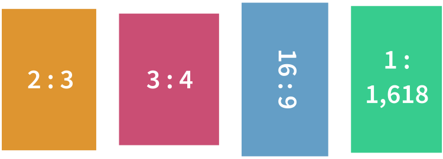

@charak
@charakHarmonische Verhältnisse
Am 19. August 2022 hatte unser Papierformat ein Jubiläum: Die Blattgröße DIN A4 ist vor genau 100 Jahren genormt worden. Genauer gesagt war es ein ganzes System aus verschiedenen Größen – von 4mal A0 bis A10, dazu die leicht größeren B- und C-Reihen (z. B. für Umschläge) und die etwas kleinere D-Reihe. Diese über 40 definierten Papiergrößen haben eines gemeinsam: Die kurze Papierseite verhält sich zur längeren wie 1 zu √2 (die Quadratwurzel aus 2, ungefähr 1,4142…).
Was ist das besondere an diesem krummen Seitenverhältnis? Es ist das einzige, dass gleich bleibt, wenn man das Format in der langen Seite halbiert. Faltet man ein DIN-A4-Blatt (29,7 × 21 cm) in der Mitte, entsteht ein halb so großes Blatt im Format DIN A5 (21 × 14,8 cm). Bei beiden Blättern ist die lange Seite √2-mal so lang wie die kurze.

Bei jedem anderen Format entsteht beim Halbieren immer abwechselnd ein breiteres oder schlankeres Rechteck. Hier beispielsweise ein Blatt mit dem Verhältnis 5 zu 6:

Es hat große Vorteile, wenn Papiermaße auf einheitliche Größen genormt sind. Zum Beispiel passen Akten genau in den entsprechenden Ordner, ohne dass oben oder seitlich etwas hervorsteht; ein ausgedruckter Brief lässt sich einfach falten und geht genau in den genormten Umschlag; man kann in jedem Schreibwarenladen Druckerpapier kaufen, ohne vorher messen zu müssen, ob das Format daheim wirklich in den Drucker passt. Und durch das „magische“ Seitenverhältnis 1:√2 lassen sich Vorlagen auf dem Kopierer vergrößern und verkleinern und gehen trotzdem auf das nächstkleinere oder nächstgrößere Blatt, weil die Proportionen ja gleich bleiben.
Praktisch, aber langweilig
Papiere im Verhältnis 1:√2 gab es schon zu Zeiten der Französischen Revolution. Auch für den Renaissance-Architekten Andrea Palladio zählte dieses Format zu harmonischen Seitenverhältnissen, die er in seinen Gebäuden zum Beispiel für Räume, Türen oder Fenster benutzt hat.
Eine Kritik am genormten Papierformat ist, dass es ziemlich unästhetisch sei (sagt zum Beispiel der bekannte Gestalter Erik Spiekermann im Dlf-Kultur-Beitrag über das DIN-Format). Meiner Meinung nach hat das viel mit Gewohnheit zu tun. Wenn jeder das gleiche Format verwendet, gilt dieses schnell als gewöhnlich, als langweiliger Standard. Alles was davon abweicht, ist interessanter.
Bei Büchern hat sich kein einheitliches Seitenverhältnis durchgesetzt, sondern das Format richtet sich im Idealfall nach dem Inhalt: Lyrikbände mit kurzen Gedichtzeilen sind eher schmal, mehrspaltige Nachschlagewerke eher breit, Romane liegen irgendwo dazwischen. Große Bildbände mit Landschaftsfotografien kommen manchmal sogar im Querformat daher.
Das allerschönste Format
Bevor sich das DIN-Format durchgesetzt hat, waren Papiere mit anderen Seitenverhältnissen üblich, zum Beispiel das schlanke, elegant wirkende Format 2:3 oder das als ruhig geltende 3:4. Aus dem Filmbereich kennt man das Bildformat 16:9 (als Querformat, so wie auch unsere Augen angeordnet sind). Ein weiteres bekanntes Seitenverhältnis ist der Goldene Schnitt (ca. 1:1,618).

Im 19. Jahrhundert untersuchte Gustav Theodor Fechner, Begründer der Psychophysik, ob es ein bestimmtes Seitenverhältnis gibt, das wir Menschen besonders ästhetisch finden – und ob es vielleicht der berühmte Goldene Schnitt sei. In seinem Buch Vorschule der Ästhetik von 1876 beschreibt er im Band 2 ab Seite 184 ein Experiment: Fast 350 Personen sollten aus zehn verschiedenen Karton-Rechtecken dasjenige aussuchen, das für sie den „wohlgefälligsten Eindruck“ mache.
Die Ergebnis-Tabelle zeigt, dass den meisten (rund 35 %) das Rechteck mit dem Seitenverhältnis 21:34 gefiel, was auch am nächsten am Goldenen Schnitt lag. Allerdings räumt Fechner ein, dass die Teilnehmer lange zwischen verschiedenen Formaten schwankten, bei einer Wiederholung ein anderes Rechteck wählten und ermuntert werden mussten, möglichst ganz allgemein und durchschnittlich die Wohlgefälligkeit zu beurteilen, nicht nach einem bestimmten Anwendungszweck.
Würde man den Versuch heute wiederholen, schätze ich, dass das Rechteck im gewohnten Fernsehformat 16:9 ziemlich weit vorn dabei wäre; genau wie dasjenige im DIN-Format 1:√2. Diese Verhältnisse sind uns heute einfach sehr vertraut (und darum wohlgefällig?).
Ihr könnt das ja mal ausprobieren: Nehmt ein großes Blatt Papier und zeichnet Freihand und nicht zu groß ein Rechteck mit möglichst harmonischem Seitenverhältnis – gerne im Hoch- und nochmal im Querformat. Wenn ihr nachmesst: Welches Format hat es bei euch?
---
Rubrik(en): #kritik